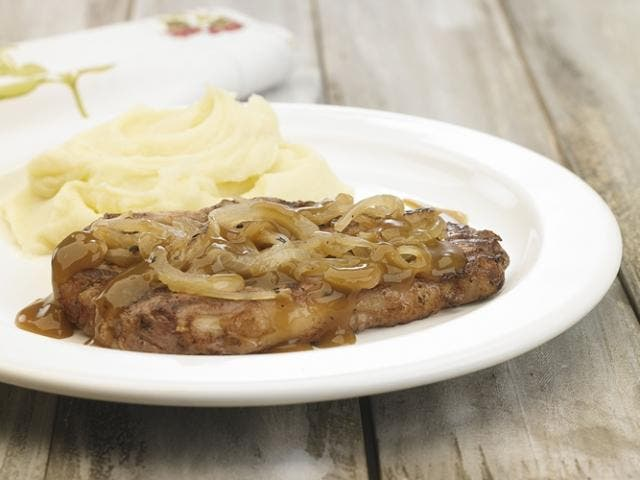

Bifes con cebolla

El cuadril es uno de los cortes de res más sabrosos y tiernos. Con este corte se puede preparar una gran variedad de receta como por ejemplo bifes con cebolla y salsa Demi Glacé que hoy aprenderás a preparar.
Ingredientes:
Para los bifes con cebolla
- 1 kilo de bifes de cuadril
- ½ kilo de cebolla
- Aceite
- Pimienta negra molida
- Sal
Para el Demi Glacé
- 125c.c. de vino blanco
- 350c.c. de agua
- 40g de salsa Demi Glacé de Knorr/li>
- 50c.c. de agua fría
- 2 cucharadas al ras de mostaza
Preparacion
Bifes con cebolla
- Salpimienta los bifes de cuadrily séllalos de ambos lados en una sartén antiadherente preferentemente. Retira y reserva.
- Pela las cebollas y córtalas en pluma.Colócalas en la sartén con un chorrito de aceite y cocínalas a fuego medio hasta transparentar. Retira y reserva junto con los bifes de cuadril.
Demi Glacé
- Añade el vino blanco en la sartén y deja reducir a la mitad. Incorpora 350c.c de agua y cuando hierva, agrega la salsa Demi Glacé disuelta en 100c.c. de agua fría.
- Deja hervir durante 3 minutos a fuego medio y añade la mostaza. Revuelve muy bien e incorpora los bifes y la cebolla.
- Disminuye el fuego y cocina durante 5-10 minutos. Acompaña los bifes con cebolla y salsa Demi Glacé con un delicioso puré de patatas.
Como verás en la lista de ingredientes aconsejo comprar la salsa Demi Glacé de Knorr o Maggi ya lista porque su proceso de elaboración es bastante trabajoso y además, requiere de muchos ingredientes por lo que el valor de esta receta se iría hasta a las nubes y no es la idea. La salsa Demi Glacé se usa como base para elaborar otras salsas.
Volver Arriba
Volver Atras